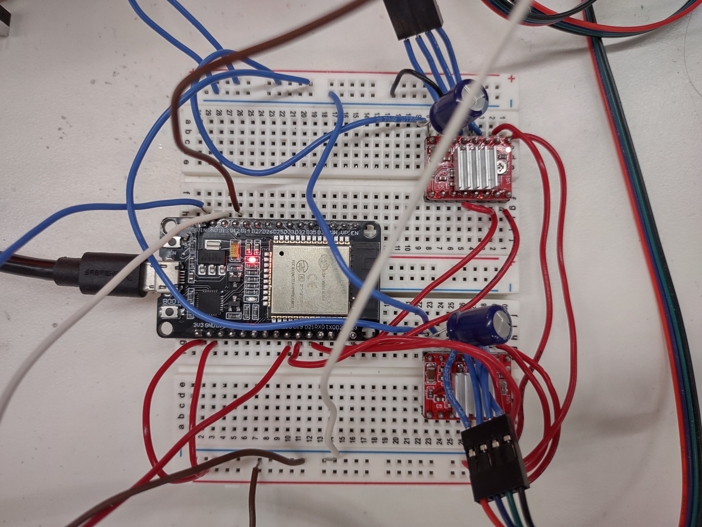
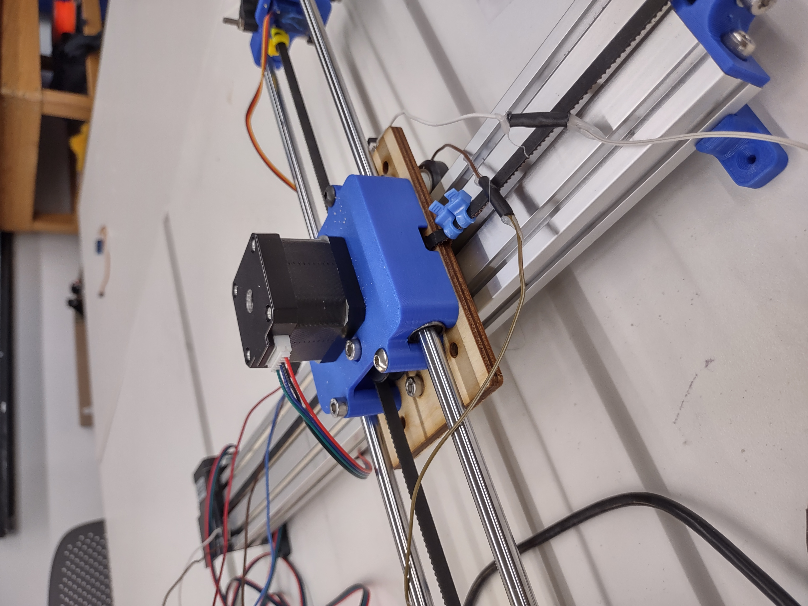
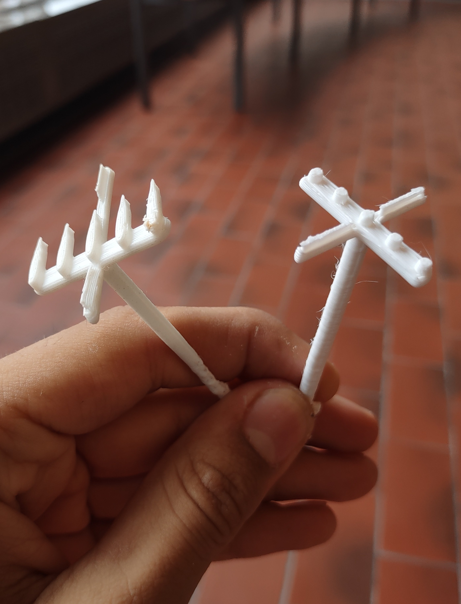
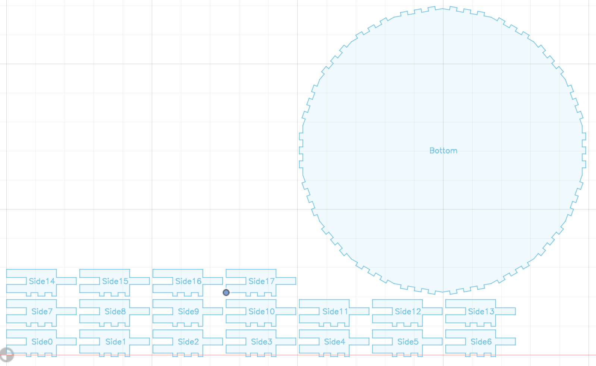
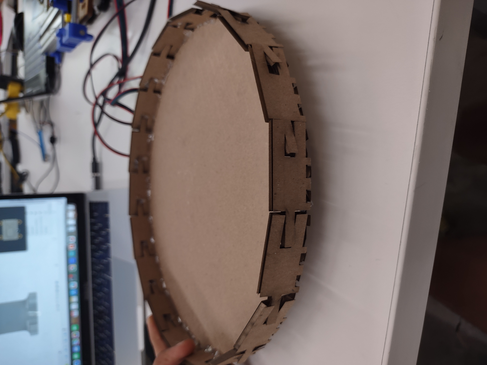
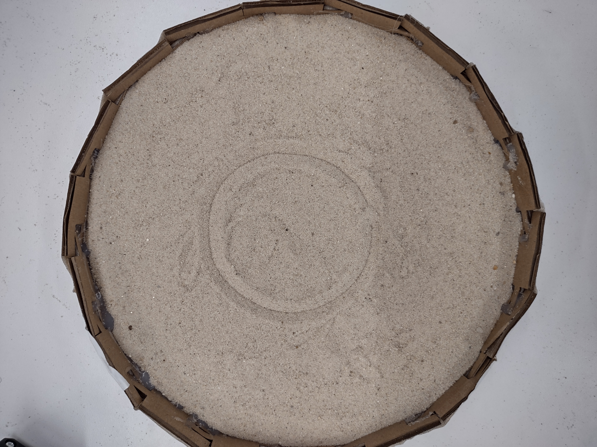
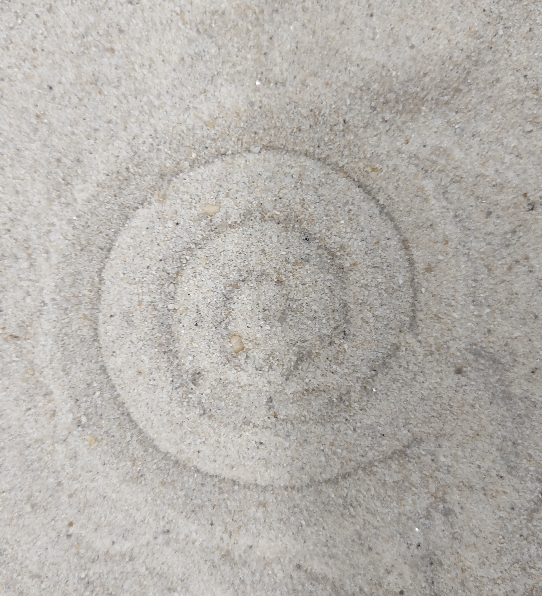
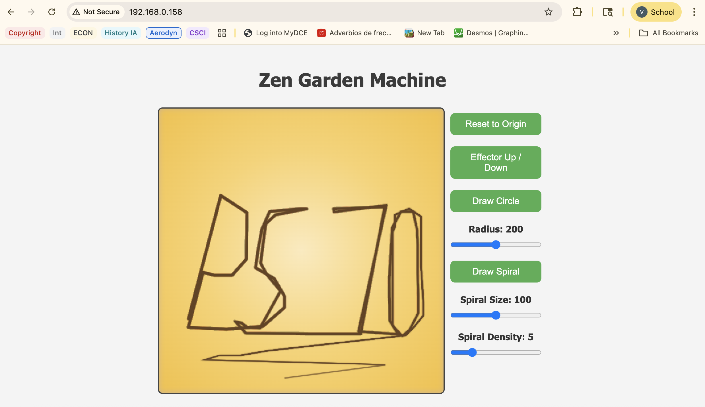

<div class="textcontainer">
<p class="margin"> </p>
<h3>Weeks 10-12: Machine Building</h3>
<h4>Assignment: Build a zen garden Drawing Robot</h4>
<h4 style="text-align:center"><u>Intro</u><h4><br>
<h5>This week's assignment was a difficult point in my PS70 journey. Hardware issues, software issues, and issues of thy self compounded into an initially dysfunctional product. Nevertheless, I feel learnt a lot, and feel like I'm better equipped to move ahead into the final project</h5><br>
<h5>Our aim was to build a zen garden robot (which is ironic, because zen is the one thing we had trouble finding). Here was our process:</h5>
<h4 style="text-align:center"><u>Basic setup</u></h4><br>
<h5>
For our setup, the entire team pitched in. Mark tapped the aluminum and joint majority of the compoents, while Will, Fatih and I worked on securing the belt, gears, and motors. Later, we also added the servo and 2 limit switches. I wired the setup to the breadboard (after facing cotinuous difficulty with the drivers), and tested the fuctionality of each stepper individually. Below are pictures of the setup:
</h5><br>
<div style="display: flex; gap: 10px; align-items: stretch;">
<p></p>
<p></p>
</div><br>
<h4 style="text-align:center"><u>End effector</u></h4><br>
<h5>
I tried designing a few different variations for the end effector. The aim was to design a rake that fit into a ball bearing, draging in the sand to create a pattern. The shape of the rake would allow it to be self-stabilising, keeping the line of teeth perpedicular to the path in which the effector was traced. To do this, I experimented with making the top profile of the teeth aerodynamically teardrop shaped, and creating a rudder behind so that frictionn with the sand would continuopusly re-align the rake to the path of least resistance. I also made a CAD model that fit the effector to the bearing, and had the capacity to move up /down with the servo. Below is media related to the end effector:
</h5><br>
<h5>
<u>First prototypes:</u>
</h5>
<div style="display: flex; gap: 10px; align-items: stretch;">
<iframe src="https://muwci14.autodesk360.com/shares/public/SH286ddQT78850c0d8a4eb90b5fca7467a46?mode=embed" width="640" height="480" allowfullscreen="true" webkitallowfullscreen="true" mozallowfullscreen="true" frameborder="0"></iframe>
<p></p>
</div><br>
<h5>
<u>Final designs:</u>
</h5>
<div style="display: flex; gap: 10px; align-items: stretch;">
<iframe src="https://muwci14.autodesk360.com/shares/public/SH286ddQT78850c0d8a4350be51bbd5da0dd?mode=embed" width="640" height="480" allowfullscreen="true" webkitallowfullscreen="true" mozallowfullscreen="true" frameborder="0"></iframe>
<video src="Effector_2.mp4" autoplay loop muted playsinline
style="height: 480px; width: auto; object-fit: contain; border: 1px solid #ccc;"></video>
</div><br>
<h4 style="text-align:center"><u>Holding box for sand</u></h4><br>
<h5>
Will, Fatih, and I created a holding box for the sand. We created a rough circle made of 20 side pieces, and printed it out on the laser cutter. Finally, we taped the sides so that sad wouldn't leak out, and hot-glued the cracks. Lastly, Will hot glued 4 circles on the bottom so that the box would grip the surface beneath and not shift around while the end effector moved through it. Below are some photos
</h5><br>
<div style="display: flex; gap: 10px; align-items: stretch;">
<p></p>
<p></p>
</div><br>
<h4 style="text-align:center"><u>Code</u></h4><br>
<h5>
Now we arrive at the nasty part. I began with a basic code which allowed me to draw lines out in a box and have the machine trace them in real life:
</h5><br>
<pre style="font-size: 16px;"><code class="cpp">
#include &lt;WiFi.h&gt;
#include &lt;AsyncTCP.h&gt;
#include &lt;ESPAsyncWebServer.h&gt;
#include &lt;AccelStepper.h&gt;
AccelStepper stepper_X(1, 26, 27);
AccelStepper stepper_Y(1, 14, 12);
const char* ssid = &quot;MAKERSPACE&quot;;
const char* password = &quot;12345678&quot;;
String message = &quot;&quot;;
AsyncWebServer server(80);
AsyncWebSocket ws(&quot;/ws&quot;);
String steps_X;
String steps_Y;
int penDown = 0;
bool newRequest = false;
const char index_html[] PROGMEM = R&quot;rawliteral(
&lt;!DOCTYPE html&gt;
&lt;html&gt;
&lt;head&gt;
&lt;title&gt;Sidewalk Plotter Control&lt;/title&gt;
&lt;meta name=&quot;viewport&quot; content=&quot;width=device-width, initial-scale=1&quot;&gt;
&lt;/head&gt;
&lt;body&gt;
&lt;div class=&quot;topnav&quot;&gt;
&lt;h3&gt;Sidewalk Plotter Control&lt;/h3&gt;
&lt;/div&gt;
&lt;div class=&quot;content&quot;&gt;
&lt;canvas id=&quot;canvas&quot; width=&quot;600&quot; height=&quot;100&quot; style=&quot;border: 1px solid black;&quot;&gt;
Your browser does not support the HTML 5 Canvas.
&lt;/canvas&gt;
&lt;label class=&quot;switch&quot;&gt;
&lt;input type=&quot;checkbox&quot; onclick=&quot;togglePen()&quot;&gt;
&lt;span class=&quot;slider round&quot;&gt;Pen Down&lt;/span&gt;
&lt;/label&gt;
&lt;/div&gt;
&lt;/body&gt;
&lt;script&gt;
var gateway = `ws://${window.location.hostname}/ws`;
var websocket;
window.addEventListener('load', onload);
var dir;
var pointsX = [];
var pointsY = [];
var penDown = 0;
var canvas = document.querySelector('canvas'),
ctx = canvas.getContext('2d');
ctx.lineWidth = 2;
ctx.strokeStyle = 'red';
//report the mouse position on click
canvas.addEventListener(&quot;click&quot;, function (evt) {
var mousePos = getMousePos(canvas, evt);
if (penDown == 0){
pointsX.pop();
pointsY.pop();
}
pointsX.push(mousePos.x);
pointsY.push(mousePos.y);
websocket.send(mousePos.x+&quot;&amp;&quot;+mousePos.y+&quot;-&quot;+penDown);
ctx.beginPath();
for (var i = 0; i &lt; pointsX.length; i++){
ctx.lineTo(pointsX[i], pointsY[i]);
}
ctx.stroke();
}, false);
//Get Mouse Position
function getMousePos(canvas, evt) {
var rect = canvas.getBoundingClientRect();
return {
x: evt.clientX - rect.left,
y: evt.clientY - rect.top
};
}
function togglePen(){
if (penDown == 0){
penDown = 1;
} else {
penDown = 0;
}
console.log(penDown);
}
function onload(event) {
initWebSocket();
}
function initWebSocket() {
console.log('Trying to open a WebSocket connection…');
websocket = new WebSocket(gateway);
websocket.onopen = onOpen;
websocket.onclose = onClose;
websocket.onmessage = onMessage;
}
function onOpen(event) {
console.log('Connection opened');
}
function onClose(event) {
console.log('Connection closed');
setTimeout(initWebSocket, 2000);
}
function onMessage(event) {
console.log(event.data);
}
&lt;/script&gt;
&lt;/html&gt;
)rawliteral&quot;;
void initWiFi() {
WiFi.mode(WIFI_STA);
WiFi.begin(ssid, password);
Serial.print(&quot;Connecting to WiFi ..&quot;);
while (WiFi.status() != WL_CONNECTED) {
Serial.print('.');
delay(1000);
}
Serial.println(WiFi.localIP());
}
void handleWebSocketMessage(void *arg, uint8_t *data, size_t len) {
AwsFrameInfo *info = (AwsFrameInfo*)arg;
if (info-&gt;final &amp;&amp; info-&gt;index == 0 &amp;&amp; info-&gt;len == len &amp;&amp; info-&gt;opcode == WS_TEXT) {
data[len] = 0;
message = (char*)data;
steps_X = message.substring(0, message.indexOf(&quot;&amp;&quot;));
steps_Y = message.substring(message.indexOf(&quot;&amp;&quot;) + 1, message.indexOf(&quot;-&quot;));
penDown = message.substring(message.indexOf(&quot;-&quot;) + 1, message.length()).toInt();
Serial.print(&quot;steps_X: &quot;);
Serial.println(steps_X);
Serial.print(&quot;steps_Y: &quot;);
Serial.println(steps_Y);
Serial.print(&quot;pen down: &quot;);
Serial.println(penDown);
newRequest = true;
}
}
void onEvent(AsyncWebSocket *server, AsyncWebSocketClient *client, AwsEventType type, void *arg, uint8_t *data, size_t len) {
switch (type) {
case WS_EVT_CONNECT:
Serial.printf(&quot;WebSocket client #%u connected from %s\n&quot;, client-&gt;id(), client-&gt;remoteIP().toString().c_str());
break;
case WS_EVT_DISCONNECT:
Serial.printf(&quot;WebSocket client #%u disconnected\n&quot;, client-&gt;id());
break;
case WS_EVT_DATA:
handleWebSocketMessage(arg, data, len);
break;
case WS_EVT_PONG:
case WS_EVT_ERROR:
break;
}
}
void initWebSocket() {
ws.onEvent(onEvent);
server.addHandler(&amp;ws);
}
String processor(const String&amp; var) {
Serial.println(&quot;PROCESSOR&quot;);
Serial.println(var);
if (var == &quot;STATE&quot;) {
return &quot;OFF&quot;;
}
return String();
}
void setup() {
Serial.begin(115200);
initWiFi();
initWebSocket();
server.on(&quot;/&quot;, HTTP_GET, [](AsyncWebServerRequest * request) {
request-&gt;send_P(200, &quot;text/html&quot;, index_html, processor);
});
server.begin();
stepper_X.setMaxSpeed(1000.0);
stepper_X.setAcceleration(1000.0);
stepper_Y.setMaxSpeed(1000.0);
stepper_Y.setAcceleration(1000.0);
}
void loop() {
if (newRequest) {
stepper_X.moveTo(steps_X.toInt());
stepper_Y.moveTo(steps_Y.toInt());
Serial.println(&quot;new&quot;);
Serial.println(steps_X.toInt());
newRequest = false;
ws.cleanupClients();
}
stepper_X.run();
stepper_Y.run();
}
</code></pre>
<h5>
However, there were a few major issues. Firstly, the y-axis wasn't workig. After an hour of fiddling, Bobby helped me find the isse: the shaft of the motor wasn't screwed securely. The second issue I faced was calibration. The x-axis seemed to move larger distace than the y-axis for the same amout of steps moved. To solve this, I wrote a code to calibrate the y-axis, which moved both motors 1000 steps. I measured the distaces travelled (28cm for x, and 20 cm for y), and found that the y-axis needed to be scaled by 1.4. Below is the calibration code, and the changed scale factor:
</h5>
<pre style="font-size: 16px;"><code class="cpp">
#include <AccelStepper.h>
AccelStepper stepper_X(1, 19, 21);
AccelStepper stepper_Y(1, 23, 22);
const long testSteps = 1000;
const int pauseTime = 5000;
void setup() {
Serial.begin(115200);
Serial.println("Stepper calibration test start");
stepper_X.setMaxSpeed(1000);
stepper_X.setAcceleration(500);
stepper_Y.setMaxSpeed(1000);
stepper_Y.setAcceleration(500);
delay(2000);
}
void loop() {
Serial.println("Moving X forward 1000 steps");
stepper_X.moveTo(testSteps);
while (stepper_X.distanceToGo() != 0) {
stepper_X.run();
}
Serial.println("X forward move complete. Measure distance.");
delay(pauseTime);
Serial.println("Moving X back to start");
stepper_X.moveTo(0);
while (stepper_X.distanceToGo() != 0) {
stepper_X.run();
}
Serial.println("X reset complete.");
delay(2000);
Serial.println("Moving Y forward 1000 steps");
stepper_Y.moveTo(testSteps);
while (stepper_Y.distanceToGo() != 0) {
stepper_Y.run();
}
Serial.println("Y forward move complete. Measure distance.");
delay(pauseTime);
Serial.println("Moving Y back to start");
stepper_Y.moveTo(0);
while (stepper_Y.distanceToGo() != 0) {
stepper_Y.run();
}
Serial.println("Y reset complete.");
Serial.println("Calibration test complete. Restarting in 10 seconds...");
delay(10000);
}
</code></pre>
<h5>
Old x/y:
</h5>
<pre style="font-size: 16px;"><code class="cpp">
steps_X = message.substring(0, message.indexOf("&"));
steps_Y = message.substring(message.indexOf("&") + 1, message.indexOf("-"));
</code></pre>
<h5>
Updated x/y:
</h5>
<pre style="font-size: 16px;"><code class="cpp">
float rawX = message.substring(0, message.indexOf("&")).toFloat();
float rawY = message.substring(message.indexOf("&") + 1, message.indexOf("-")).toFloat();
int scaledX = int(rawX);
int scaledY = int(rawY * 1.4);
steps_X = String(scaledX);
steps_Y = String(scaledY);
</code></pre><br>
<h5>
Afterwards, I measured the total possible range of the machine and scaled both x and y so that the box spanned the machine's entire range. I didn't know the exact PPI, so took a rough ballpark and scaled both x and y by 1.5, which worked perfectly! Afterwards, I changed the box dimensions to 500x500px and reversed the y axis (since drawing down onn the box would result in the machine drawing up):
</h5>
<pre style="font-size: 16px;"><code class="cpp">
int scaledY = int((600 - rawY) x 1.4 x 1.5);
</code></pre>
<h5>
The next issue I faced was that the lies wer curved rather than straight, and there was a small extra movement at the end of a diagonal line. This was likely because one stepper finished slightly before the other due to unequal acceleration. I solved this by fiddling with the void loop, speed, and acceleration
</h5><br>
<h5>
The next issue was whe things began to get <b>nightmarish</b>. While tryig to introduce code for the servo to lift/drop the end effector, my microcotroller short circuited - the led went off, the system stopped working, and my computer went completely dark - I had to exchange boards ad drivers in the moring in additio to having my laptop fixed by IT. Later, I had to rewire from scratch and rewrite the whole code, which took hours.
</h5><br>
<h5>
Luckily, after some troublieshootig with the esp32servo.h library, the servo worked! Finally, I added features and functions into the code for the following:</h5><br>
<h5>I added <b>draw circle button</b> to the page, with the radius controlled using sliders - it was initially a oval, however, I stretched it by 1.5 to create a better shape. I also had the end effector loop back 30 degrees at the end, sice the first 30 degrees were not as clean. Finally, Mark, Will, and I made it so that the end effector would treat the current position as the centre, lift and move to the circle's rightmost point, trace the shape, and return to the center:<h5><br>
<div style="display: flex; gap: 10px; align-items: stretch;">
<p></p>
<video src="Circlesand.mp4" autoplay loop muted playsinline
style="height: 580px; width: auto; object-fit: contain; border: 1px solid #ccc;"></video>
</div><br>
<h5>I created an <b>effector up/down button</b> to shift the servo 90 degrees:</h5><br>
<div style="display: flex; gap: 10px; align-items: stretch;">
<video src="EndEffectyorUp.mp4" autoplay loop muted playsinline
style="height:480px; width: auto; object-fit: contain; border: 1px solid #ccc;"></video>
</div><br>
<h5>I created a <b>spiral generating button</b> using math.h, allowing users to specify the total radius and umber of loops using sliders:</h5><br>
<div style="display: flex; gap: 10px; align-items: stretch;">
<p></p>
<video src="Spiralsand.mp4" autoplay loop muted playsinline
style="height: 580px; width: auto; object-fit: contain; border: 1px solid #ccc;"></video>
</div><br>
<h5>I coded a return to <b>origin button</b> using the limit switches, which made the end effector return to the bottom left, reset the coordinates, then made the effector move back 12cm in both directions to the center of the circle. Lastly I <b>formatted the look</b> of the website to make it easily navigable and intuitive:</h5><br>
<div style="display: flex; gap: 10px; align-items: stretch;">
<p></p>
</div><br>
<h4 style="text-align:center"><u>Final Code:</u></h4><br>
<pre style="font-size: 16px;"><code class="cpp">
#include &lt;WiFi.h&gt;
#include &lt;AsyncTCP.h&gt;
#include &lt;ESPAsyncWebServer.h&gt;
#include &lt;AccelStepper.h&gt;
#include &lt;ESP32Servo.h&gt;
#include &lt;math.h&gt;
AccelStepper stepper_X(1, 19, 21);
AccelStepper stepper_Y(1, 23, 22);
const char* ssid = &quot;MAKERSPACE&quot;;
const char* password = &quot;12345678&quot;;
const int xLimit = 12;
const int yLimit = 13;
bool xReached = false;
bool yReached = false;
bool isHoming = false; // &lt;-- new homing flag
String message = &quot;&quot;;
AsyncWebServer server(80);
AsyncWebSocket ws(&quot;/ws&quot;);
String steps_X;
String steps_Y;
int penDown = 0;
bool newRequest = false;
Servo effectorServo;
bool effectorState = false;
bool drawCircleRequested = false;
bool drawSpiralRequested = false;
const int circlePoints = 300;
int circleX[circlePoints];
int circleY[circlePoints];
int circleRadius = 200;
// Spiral parameters
int spiralSize = 200; // max radius
int spiralDensity = 5; // number of loops
const char index_html[] PROGMEM = R&quot;rawliteral(
&lt;!DOCTYPE html&gt;
&lt;html lang=&quot;en&quot;&gt;
&lt;head&gt;
&lt;meta charset=&quot;UTF-8&quot; /&gt;
&lt;meta name=&quot;viewport&quot; content=&quot;width=device-width, initial-scale=1&quot; /&gt;
&lt;title&gt;Zen Garden Machine&lt;/title&gt;
&lt;style&gt;
body {
margin: 0;
font-family: 'Segoe UI', Tahoma, Geneva, Verdana, sans-serif;
background: #f4f4f4;
color: #333;
display: flex;
flex-direction: column;
align-items: center;
padding: 20px;
box-sizing: border-box;
min-height: 100vh;
}
h1 {
font-size: 2rem;
color: #3b3b3b;
margin-bottom: 30px;
text-align: center;
width: 100%;
max-width: 700px;
}
.container {
display: flex;
flex-direction: column;
justify-content: center;
align-items: flex-start;
gap: 40px;
width: 100%;
max-width: 700px;
}
canvas {
border: 2px solid #444;
border-radius: 8px;
width: 500px;
height: 500px;
background: radial-gradient(#fceabb, #f8d36c, #f3c13a);
box-shadow: inset 0 0 10px #d2b48c;
image-rendering: pixelated;
flex-shrink: 0;
}
&lt;/style&gt;
.controls {
display: flex;
flex-direction: column;
align-items: center;
width: 180px;
flex-shrink: 0;
}
button {
background-color: #4CAF50;
color: white;
padding: 10px 20px;
margin: 10px 0;
border: none;
border-radius: 8px;
cursor: pointer;
font-size: 1rem;
transition: background-color 0.3s;
width: 160px;
}
button:hover {
background-color: #45a049;
}
input[type=range] {
width: 160px;
margin: 10px 0;
}
label {
margin-top: 10px;
font-weight: bold;
display: block;
text-align: center;
}
&lt;/style&gt;
&lt;/head&gt;
&lt;body&gt;
&lt;h1&gt;Zen Garden Machine&lt;/h1&gt;
&lt;div class="container" style="display:flex;"&gt;
&lt;canvas id="canvas" width="500" height="500"&gt;&lt;/canvas&gt;
&lt;div class="controls"&gt;
&lt;button onclick="resetToOrigin()"&gt;Reset to Origin&lt;/button&gt;
&lt;button onclick="toggleEffector()"&gt;Effector Up / Down&lt;/button&gt;
&lt;button onclick="drawCircle()"&gt;Draw Circle&lt;/button&gt;
&lt;label for="radiusSlider"&gt;Radius: &lt;span id="radiusValue"&gt;200&lt;/span&gt;&lt;/label&gt;
&lt;input type="range" id="radiusSlider" min="0" max="400" value="200" oninput="updateRadius(this.value)"&gt;
&lt;button onclick="drawSpiral()"&gt;Draw Spiral&lt;/button&gt;
&lt;label for="spiralSizeSlider"&gt;Spiral Size: &lt;span id="spiralSizeValue"&gt;100&lt;/span&gt;&lt;/label&gt;
&lt;input type="range" id="spiralSizeSlider" min="0" max="200" value="100" oninput="updateSpiralSize(this.value)"&gt;
&lt;label for="spiralDensitySlider"&gt;Spiral Density: &lt;span id="spiralDensityValue"&gt;5&lt;/span&gt;&lt;/label&gt;
&lt;input type="range" id="spiralDensitySlider" min="1" max="20" value="5" oninput="updateSpiralDensity(this.value)"&gt;
&lt;/div&gt;
&lt;/div&gt;
&lt;script&gt;
var gateway = ws://${window.location.hostname}/ws;
var websocket;
var pointsX = [];
var pointsY = [];
var canvas = document.querySelector('canvas'),
ctx = canvas.getContext('2d');
ctx.lineWidth = 2.2;
ctx.strokeStyle = 'rgba(101, 67, 33, 0.6)';
ctx.shadowColor = 'rgba(101, 67, 33, 0.3)';
ctx.shadowBlur = 2;
canvas.addEventListener("click", function (evt) {
var mousePos = getMousePos(canvas, evt);
var x = mousePos.x;
var y = canvas.height - mousePos.y;
websocket.send(x + "&" + y + "-" + 1);
pointsX.push(x);
pointsY.push(canvas.height - y);
ctx.beginPath();
for (var i = 0; i &lt; pointsX.length; i++){
ctx.lineTo(pointsX[i], pointsY[i]);
}
ctx.stroke();
}, false);
function getMousePos(canvas, evt) {
var rect = canvas.getBoundingClientRect();
return {
x: evt.clientX - rect.left,
y: evt.clientY - rect.top
};
}
function toggleEffector(){
websocket.send("EFF_TOGGLE");
console.log("Effector toggle requested");
}
function drawCircle(){
websocket.send("DRAW_CIRCLE");
console.log("Draw circle requested");
}
function resetToOrigin() {
websocket.send("RESET_ORIGIN");
console.log("Reset to Origin requested");
}
function drawSpiral(){
websocket.send("DRAW_SPIRAL");
console.log("Draw spiral requested");
}
function updateRadius(value) {
document.getElementById('radiusValue').innerText = value;
websocket.send("SET_RADIUS:" + value);
}
function updateSpiralSize(value) {
document.getElementById('spiralSizeValue').innerText = value;
websocket.send("SET_SPIRAL_SIZE:" + value);
}
function updateSpiralDensity(value) {
document.getElementById('spiralDensityValue').innerText = value;
websocket.send("SET_SPIRAL_DENSITY:" + value);
}
function onload(event) {
initWebSocket();
}
function initWebSocket() {
console.log('Trying to open a WebSocket connection…');
websocket = new WebSocket(gateway);
websocket.onopen = onOpen;
websocket.onclose = onClose;
websocket.onmessage = onMessage;
}
function onOpen(event) {
console.log('Connection opened');
}
function onClose(event) {
console.log('Connection closed');
setTimeout(initWebSocket, 2000);
}
function onMessage(event) {
console.log(event.data);
}
window.addEventListener('load', onload);
&lt;/script&gt;
&lt;/body&gt;
&lt;/html&gt;
)rawliteral";
void initWiFi() {
WiFi.mode(WIFI_STA);
WiFi.begin(ssid, password);
Serial.print("Connecting to WiFi ..");
while (WiFi.status() != WL_CONNECTED) {
Serial.print('.');
delay(1000);
}
Serial.println(WiFi.localIP());
}
void handleWebSocketMessage(void *arg, uint8_t *data, size_t len) {
AwsFrameInfo *info = (AwsFrameInfo*)arg;
if (info->final &amp;&amp; info->index == 0 &amp;&amp; info->len == len &amp;&amp; info->opcode == WS_TEXT) {
data[len] = 0;
message = (char*)data;
if (message == "EFF_TOGGLE") {
effectorState = !effectorState;
effectorServo.write(effectorState ? 90 : 0);
Serial.println(effectorState ? "Effector Down (90°)" : "Effector Up (0°)");
return;
}
if (message == "DRAW_CIRCLE") {
drawCircleRequested = true;
Serial.println("Circle draw triggered!");
return;
}
if (message == "DRAW_SPIRAL") {
drawSpiralRequested = true;
Serial.println("Spiral draw triggered!");
return;
}
if (message.startsWith("SET_RADIUS:")) {
circleRadius = message.substring(String("SET_RADIUS:").length()).toInt();
Serial.print("Circle radius set to ");
Serial.println(circleRadius);
return;
}
if (message.startsWith("SET_SPIRAL_SIZE:")) {
spiralSize = message.substring(String("SET_SPIRAL_SIZE:").length()).toInt();
Serial.print("Spiral size set to ");
Serial.println(spiralSize);
return;
}
if (message.startsWith(&quot;SET_SPIRAL_DENSITY:&quot;)) {
spiralDensity = message.substring(String(&quot;SET_SPIRAL_DENSITY:&quot;).length()).toInt();
Serial.print(&quot;Spiral density set to &quot;);
Serial.println(spiralDensity);
return;
}
if (message == &quot;RESET_ORIGIN&quot;) {
Serial.println(&quot;Reset to origin requested!&quot;);
resetToOrigin();
return;
}
// Handle manual XY drawing messages
float rawX = message.substring(0, message.indexOf(&quot;&amp;&quot;)).toFloat();
float rawY = message.substring(message.indexOf(&quot;&amp;&quot;) + 1, message.indexOf(&quot;-&quot;)).toFloat();
int scaledX = int(rawX * 1.48);
int scaledY = int(rawY * 1.48 * 1.4);
steps_X = String(scaledX);
steps_Y = String(scaledY);
penDown = message.substring(message.indexOf(&quot;-&quot;) + 1).toInt();
Serial.print(&quot;steps_X: &quot;); Serial.println(steps_X);
Serial.print(&quot;steps_Y: &quot;); Serial.println(steps_Y);
Serial.print(&quot;pen down: &quot;); Serial.println(penDown);
newRequest = true;
}
}
void onEvent(AsyncWebSocket *server, AsyncWebSocketClient *client, AwsEventType type, void *arg, uint8_t *data, size_t len) {
switch (type) {
case WS_EVT_CONNECT:
Serial.printf(&quot;WebSocket client #%u connected from %s\n&quot;, client-&gt;id(), client-&gt;remoteIP().toString().c_str());
break;
case WS_EVT_DISCONNECT:
Serial.printf(&quot;WebSocket client #%u disconnected\n&quot;, client-&gt;id());
break;
case WS_EVT_DATA:
handleWebSocketMessage(arg, data, len);
break;
case WS_EVT_PONG:
case WS_EVT_ERROR:
break;
}
}
void initWebSocket() {
ws.onEvent(onEvent);
server.addHandler(&amp;ws);
}
String processor(const String&amp; var) {
if (var == &quot;STATE&quot;) return &quot;OFF&quot;;
return String();
}
void setup() {
Serial.begin(115200);
initWiFi();
initWebSocket();
server.on(&quot;/&quot;, HTTP_GET, [](AsyncWebServerRequest * request) {
request-&gt;send_P(200, &quot;text/html&quot;, index_html, processor);
});
server.begin();
pinMode(xLimit, INPUT_PULLUP);
pinMode(yLimit, INPUT_PULLUP);
stepper_X.setMaxSpeed(1000.0);
stepper_X.setAcceleration(1000.0);
stepper_Y.setMaxSpeed(1000.0);
stepper_Y.setAcceleration(1000.0);
}
effectorServo.setPeriodHertz(50);
effectorServo.attach(18);
effectorServo.write(0);
}
void drawCircle() {
int radius = circleRadius;
int centerX = 0;
int centerY = 0;
for (int i = 0; i &lt; circlePoints; i++) {
float angle = 2 * PI * i / circlePoints;
circleX[i] = radius * cos(angle);
circleY[i] = radius * sin(angle) * 1.45;
}
effectorServo.write(90);
delay(300);
stepper_X.moveTo(radius);
stepper_Y.moveTo(0);
while (stepper_X.distanceToGo() != 0 || stepper_Y.distanceToGo() != 0) {
stepper_X.run();
stepper_Y.run();
}
delay(100);
effectorServo.write(0);
delay(300);
for (int i = 0; i &lt;= circlePoints; i++) {
int index = i % circlePoints;
int x = centerX + circleX[index];
int y = centerY + circleY[index];
stepper_X.moveTo(x);
stepper_Y.moveTo(y);
while (stepper_X.distanceToGo() != 0 || stepper_Y.distanceToGo() != 0) {
stepper_X.run();
stepper_Y.run();
}
}
effectorServo.write(90);
// Return to center
stepper_X.moveTo(0);
stepper_Y.moveTo(0);
while (stepper_X.distanceToGo() != 0 || stepper_Y.distanceToGo() != 0) {
stepper_X.run();
stepper_Y.run();
}
drawCircleRequested = false;
}
void drawSpiral() {
int centerX = 0;
int centerY = 0;
const int spiralPoints = 500;
effectorServo.write(90);
delay(300);
stepper_X.moveTo(centerX);
stepper_Y.moveTo(centerY);
while (stepper_X.distanceToGo() != 0 || stepper_Y.distanceToGo() != 0) {
stepper_X.run();
stepper_Y.run();
}
delay(100);
effectorServo.write(0);
delay(300);
for (int i = 0; i &lt;= spiralPoints; i++) {
float angle = (float)i / spiralPoints * spiralDensity * 2 * PI;
float radius = (float)i / spiralPoints * spiralSize;
int x = centerX + radius * cos(angle);
int y = centerY + radius * sin(angle) * 1.45;
stepper_X.moveTo(x);
stepper_Y.moveTo(y);
while (stepper_X.distanceToGo() != 0 || stepper_Y.distanceToGo() != 0) {
stepper_X.run();
stepper_Y.run();
}
}
effectorServo.write(90);
stepper_X.moveTo(0);
stepper_Y.moveTo(0);
while (stepper_X.distanceToGo() != 0 || stepper_Y.distanceToGo() != 0) {
stepper_X.run();
stepper_Y.run();
}
drawSpiralRequested = false;
}
// NEW non-blocking homing function sets flags and starts moving
void resetToOrigin() {
xReached = false;
yReached = false;
stepper_X.moveTo(100000); // move positively towards limit switch
stepper_Y.moveTo(-100000); // move negatively towards limit switch
isHoming = true;
Serial.println(&quot;Homing started&quot;);
}
void loop() {
if (isHoming) {
if (!xReached) {
stepper_X.run();
if (digitalRead(xLimit) == LOW) {
xReached = true;
stepper_X.setCurrentPosition(0);
stepper_X.stop();
Serial.println(&quot;X axis homed&quot;);
}
}
if (!yReached) {
stepper_Y.run();
if (digitalRead(yLimit) == LOW) {
yReached = true;
stepper_Y.setCurrentPosition(0);
stepper_Y.stop();
Serial.println(&quot;Y axis homed&quot;);
}
}
if (xReached &amp;&amp; yReached) {
isHoming = false;
Serial.println(&quot;Homing complete&quot;);
}
return; // skip other loop code during homing
}
if (newRequest) {
stepper_X.moveTo(steps_X.toInt());
stepper_Y.moveTo(steps_Y.toInt());
newRequest = false;
ws.cleanupClients();
}
if (drawCircleRequested) {
drawCircle();
}
if (drawSpiralRequested) {
drawSpiral();
}
stepper_X.run();
stepper_Y.run();
}
</code></pre>
<h4 style="text-align:center"><u>Conclusion, and appraisal of issues</u></h4><br>
<h5>
On the whole it was an instructive experience (ignoring the peronal breakdown linked to the microcontroller breakdown). I wish we could have been more communicative as a group. With Mark gone due to his being sick, and issues with communication and workload division between other members, there was a lot of room for improvement. However, on Thursday, an hour before the showcase, we came together really well, and ended up debugging several issues. Hoping for more experiences like this in the future!
</h5><br>
</div>